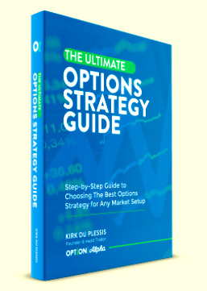

Меню
Меню Брокеры
Брокеры Стратегии
СтратегииСтратегии для новичков
Профессиональные трейдеры знают, что не стоит надеяться на простое везение в работе с бинарными опционами. Этот финансовый инструмент позволяет зарабатывать больше, если использовать особые стратегии торговли.
Как заработать на опционах новичку, используя стратегии?
Опытные инвесторы используют сложные стратегии, которые имеют массу разных индикаторов и графических паттернов, в них разобраться могут только профессионалы. Для новичков есть более простые стратегии для бинарных опционов, опирающиеся на элементарных понятиях статистики, управления капиталами и рисками, что позволяет их использовать даже начинающим торговцам опционами.
Доступная стратегия Мартингейл
Эта методика является одной из самых популярных стратегий, использующихся новичками. В ней нужно приобретать опционы, каждый раз увеличивая сумму сделки в определенной прогрессии, чтобы покрыть предыдущие неудачные покупки и получить дополнительный доход. Данная методика требует довольно значительных вложений, поскольку сессия неудачных сделок может быть достаточно длинной, и потребуются существенная сумма, чтобы перекрыть прибылью все предыдущие затраты.
Стратегия Хеджирование рисков
В данной методике необходимо приобретать сразу два опциона, с противоположными направлениями прогнозов. Эта стратегия позволяет получить гарантированный доход в любом варианте движения цены актива. Один опцион покупают, выбирая направление изменения цены на одном временном промежутке, а другой – на противоположный тренд в более длинном временном периоде. Такой метод в большинстве случаев позволяет получить прибыль сразу по двум опционам, поскольку цены на все активы, как правило, изменяются волнообразно.
Метод торговли по тренду
Такая стратегия применяется, в основном на торговле опционами на валютные пары. При восходящем тренде повышении цены на одну из валют покупается опцион колл. В этой методике необходимо только правильно выставить временной период, поскольку неизвестно в какой момент изменение стоимости валюты может развернуться в обратную сторону.
Торговля по прогнозам
Данная методика основывается на выборе ставок, согласно прогнозам профессиональных экспертов. Опытные специалисты лучше разбираются в тонкостях рынка и смогут с существенно большей вероятностью правильно предсказывать различные изменения цены активов.
Используя разные варианты стратегий, инвесторы смогут получить хороший доход.